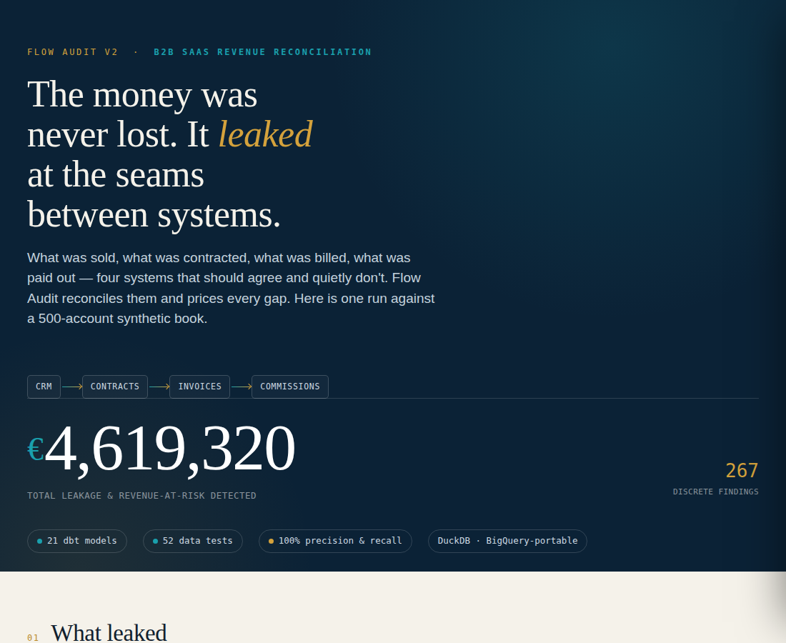

Revenue doesn't vanish in a single dramatic event. It leaks — quietly, at the seams between systems that are each, on their own terms, working perfectly.
A deal closes in the CRM. A contract is signed in another system. Invoices go out from a third. Commissions are paid from a fourth. Every one of them is internally correct. And yet, between them, money slips through gaps no single system is responsible for watching: a contract still marked active long after billing quietly stopped, an invoice that double-counts a period, a commission paid above the plan rate with no approval behind it.
I built Flow Audit to find those gaps and put a number on them. On a single synthetic 500-account book, it surfaced €4.6M in leakage and revenue-at-risk across six distinct leak types — each one traced to specific records, each one priced.

The hard part wasn't finding leaks. It was not crying wolf.
Here is the thing I underestimated. A detector that flags "problems" is worthless the moment it flags something legitimate — because the first time a finance lead opens your report, finds an approved credit sitting in your "leak" list, and realizes you didn't account for it, they stop trusting the whole thing. And they're right to.
Approved credits, negotiated spiffs, commission accelerators — on the raw data, these look identical to leaks. The difference isn't in the numbers; it's in whether someone with authority signed off. So the real work wasn't detection. It was teaching the system to consult the approval registers and define leakage as unexplained variance only — the gap that no one authorized.
Being right isn't enough. You have to be able to prove you're right — and prove it falsifiably.
So I made it prove itself.
Instead of asserting the detection worked, I built a calibration layer to test it. I planted 267 known leaks into the data alongside 37 legitimate exceptions, and made the system tell them apart — then measured the result against that ground truth.
It caught every planted leak and correctly ignored every approved exception: 100% precision, 100% recall — zero false alarms, zero misses. Not because I said so, but because a test that could have failed, didn't. The audit, audited.
What I took from it
In analytics engineering, the dashboards people trust and the ones they quietly ignore differ on exactly this point: can the thing prove it isn't lying? A number with a falsifiable test behind it changes a conversation. A number without one is just an opinion in a nicer font.
Growth comes from removing obstruction in the value flow. But first you have to see the obstruction — and prove it's really there.